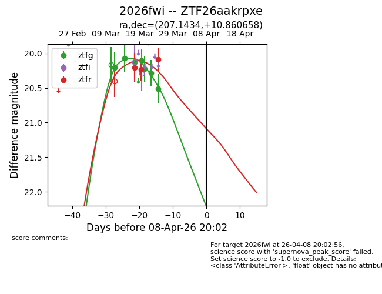
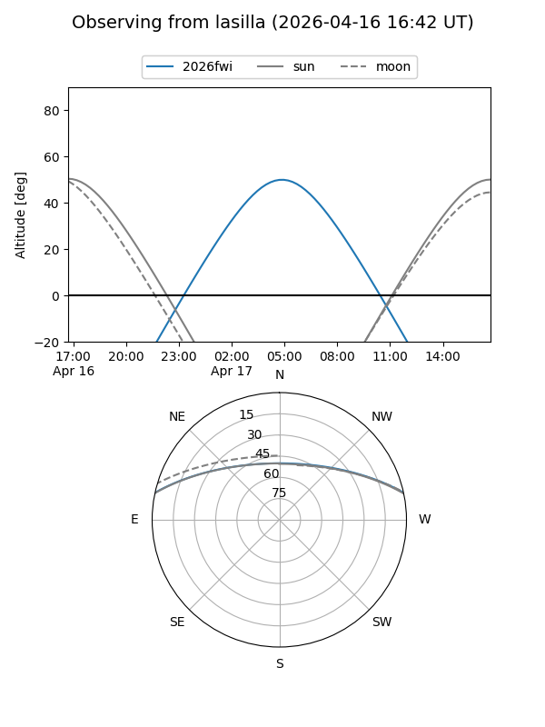
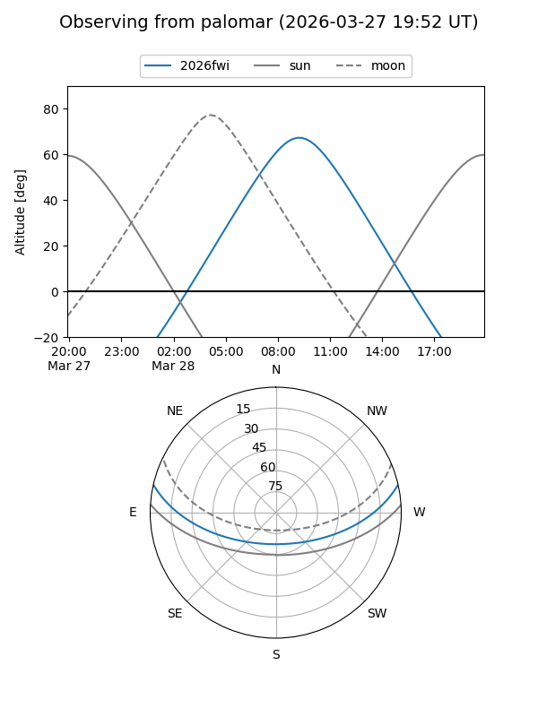
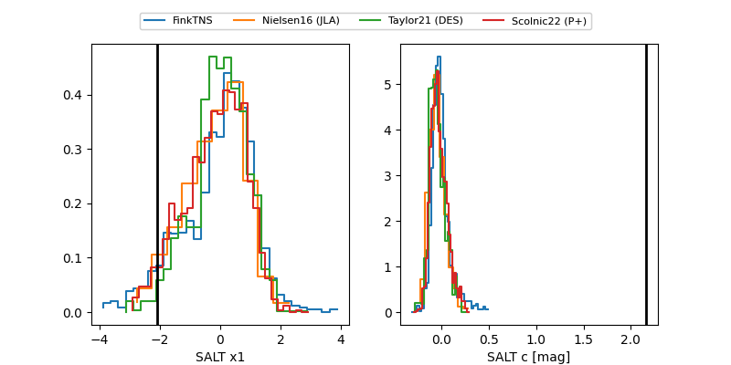

2026fwi
Target 2026fwi at 2026-04-08 20:07
Aliases and brokers:
FINK: link
Lasair: link
ALeRCE: link
TNS: link
YSE: link
alt names
ZTF26aakrpxe (ztf,fink_ztf)
2026fwi (tns,yse)
Coordinates:
equatorial (ra, dec) = 207.1434,+10.86066
equatorial (HMS+DMS) = 13:48:34.43,+10:51:38.37
galactic (l, b) = (345.2334,+68.89825)
Flags:
Photometry:
last ztfg=20.51, ztfr=20.09
7 ztfg, 3 ztfr detections
Lightcurve

Visibility


Additional plots
